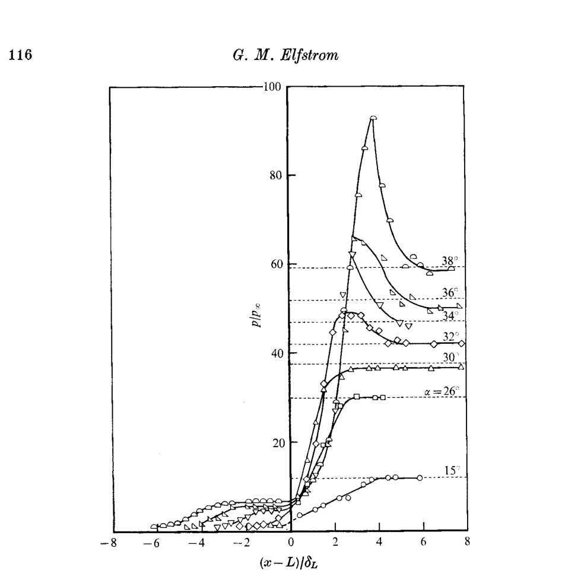
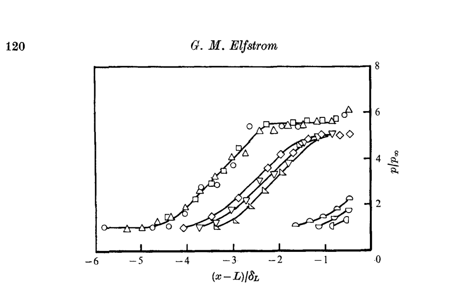
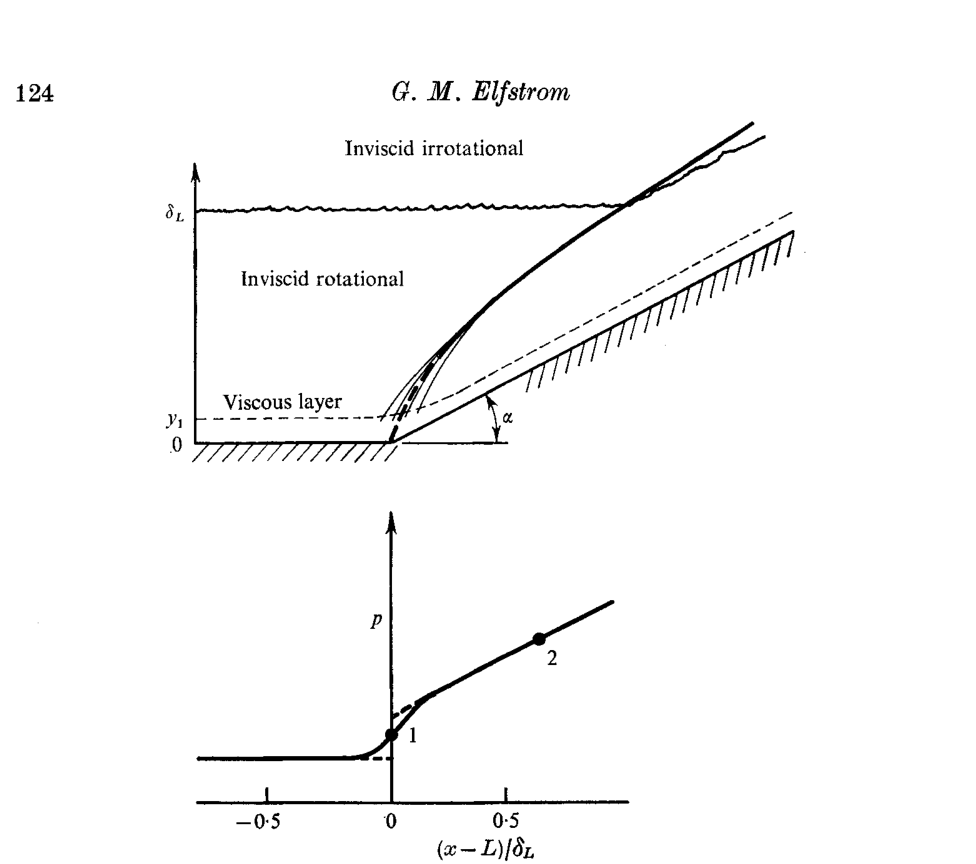

01中文摘要
利用高超声速炮风洞研究楔形压缩拐角处的湍流激波-边界层干扰。实验结果扩展了现有数据的马赫数范围，尤其是初始分离数据；通过不同楔角下的表面压力与流场显示，确定初始分离条件随马赫数和雷诺数的变化，并与已有超声速关联式比较。
原始摘要（英文/原文）
A hypersonic gun tunnel has been used to investigate turbulent shock-boundary-layer interaction at a wedge-compression corner. The results extent the Mach number range of existing data, in particular of incipient separation.
02阅读说明
实验研究（高超声速炮风洞）兼简化理论模型；J. Fluid Mech. 53(1), 1972, pp.113–127，15页全文完整。文本层公式丢失，已回读PDF第2–3页补录式(1)–(6)；图件4张（图1、3、9、16），其中图3/9的图例与坐标OCR错乱，部分图内数值不可读。页码引用采用文内印刷页码；figures的page字段沿用图件清单的PDF页序号。 文章类型：期刊
03一句话核心与三句话摘要
高超声速湍流楔形压缩角实验：α<30°上游影响远小于δ，α>30°出现分离平台与压力过冲，并给出起始分离估计。
- 已有湍流激波-边界层干扰数据多集中在超声速、雷诺数范围有限，高超声速下楔形压缩角的起始分离条件缺乏直接测量。 AI概括
- 在M∞≈9.2的氮气炮风洞中测量15°–38°楔角平板-襟翼模型静压，α<30°时上游影响远小于一个边界层厚度、楔面压力接近无黏值，α>30°时出现随α增长的分离平台和压力过冲。 原文明确
- 作者提出以压力过冲消失作为起始分离判据，并用分层斜激波模型估计起始分离角，预测值总体偏高但在较高马赫数下与实验趋势一致。 AI概括
04核心内容清单
| 要点 | 类型 | 重要性 | 原文依据 | 属性 |
|---|---|---|---|---|
| 研究对象为二维楔形压缩角湍流激波-边界层干扰，目的是把已有数据扩展到高超声速并识别起始分离。 | 研究目标 | A | p113，Introduction | 原文明确 |
| 实验条件：M=9氮气炮风洞、贮室温度1070 K、压力1000 atm、运行约25 ms，模型43 cm平板+10 cm襟翼。 | 实验条件 | A | p113，§2 Apparatus | 原文明确 |
| α<30°为附着流：上游影响远小于一个边界层厚度，楔面压力接近单激波无黏值。 | 核心现象 | A | p115–116，图3 | 原文明确 |
| α>30°出现分离：上游影响随α增长，形成逐渐加长的压力平台，并在楔面出现压力过冲。 | 核心现象 | A | p116，图3 | 原文明确 |
| 分离流中提高Re同时增大分离范围和过冲幅度，平台压力基本不随Re变化。 | 参数影响 | A | p119，图7 | 原文明确 |
| 充分分离时壁温影响很小，但过冲随Tw/Tr增大；接近起始分离时提高壁温使分离提前。 | 参数影响 | A | p119–120，图8–9 | 原文明确 |
| 降低M∞使分离区增长、平台压力下降，趋势与Kuehn及Thomke & Roshko一致。 | 参数影响 | A | p120，图10 | 原文明确 |
| 分离起始前压力分布满足自由干扰坍缩，最终压力由楔角决定；平台压力可用无黏楔面压力归一化。 | 标度关系 | A | p121，图11–12 | 原文明确 |
| 压力过冲归因于分离激波与再附激波在近壁相交，被视为主要的高超声速现象。 | 机制解释 | B | p121–122 | AI概括 |
| 以压力过冲消失判定起始分离，与Thomke & Roshko的拐点判据吻合，估计精度约±0.5°。 | 判据 | A | p122–123，图13 | 原文明确 |
| 两层/三层分层斜激波模型可预测附着流压力分布，并给出起始分离角上限；预测一般高于实验。 | 模型 | B | p117–118、p124–126，图5–6、16–18 | 原文明确 |
| α_i随Re的反转趋势完全由湍流速度剖面的尾流分量η解释。 | 机制推断 | B | p126 | 原文明确 |
05引言：研究问题与领域缺口
研究对象是二维楔形压缩角处的湍流激波-边界层干扰，背景是高超声速巡航器的襟翼、扰流板和进气道性能预测（p113）。作者指出预测方法多为半经验，除Todisco & Reeves(1969)强干扰理论外缺乏理论工具，而Kuehn(1959)、Thomke & Roshko(1969)等实验集中在超声速且Re范围窄。本文目标是扩展马赫数范围（至M∞≈9）并重点识别起始分离条件（p113）。文中未给出显式假设或定量目标值，只说明实验用于扩展已有数据的M数范围。
06流动条件与几何构型
| 项目 | 数值/描述 | 依据 | 备注 |
|---|---|---|---|
| 研究类型 | 高超声速风洞实验 + 简化分层理论模型 | p113–126 | 非数值模拟 |
| 风洞 | Imperial College no.2 hypersonic gun tunnel；自由活塞压缩加热、M=9全型面喷管自由射流 | p113，§2 | 贮室压力1000 atm时运行约25 ms |
| 试验气体 | 氮气 | p113 | |
| 来流马赫数 | M∞=9.22（标称M=9）；另由模型倾角获得局部M=8.2、8、7.3 | p113–114、p120图10 | 图10给出M∞=9.22、8.2、7.3 |
| 雷诺数 | 基准Re≈4×10^5（基于平板长度L）；图4(b)另给1×10^5与4×10^5；图7给三档（OCR不清，受限于材料，无法确认具体数值） | p116图4、p119图7 | 原文下标OCR为ReδL/Re∞L，无法确认 |
| 贮室总温 | T0=1070 K | p113 | 全部试验共用 |
| 壁温 | 295 K ≤ Tw ≤ 770 K，表面不均匀度±10 K | p113 | 由埋入电阻元件加热 |
| 壁温比 | Tw/Tr=0.3、0.49、0.68（图3为Tw=295 K，即约0.3Tr） | p115–120，图3、8、9 | 图4(a)为0.3与0.68 |
| 模型几何 | 尖前缘平板至铰链线43 cm，宽17.8 cm；襟翼弦长10 cm、满展 | p113 | 二维名义构型 |
| 压力测点 | 中线孔间距2.54 mm，未粘接式应变仪传感器 | p113 | |
| 楔角/襟翼偏角 | α=15°、26°、30°、32°、34°、36°、38° | p115–116图3 | 逐工况，不合并 |
| 边界层状态 | 铰链线前为湍流，皮托耙剖面确认 | p114 | |
| 流动维数 | 二维（平板中心线测量） | p113 | 文中未讨论展向三维效应 |
07核心现象与关键参数
| 参数 | 定义 | 数值 | 关系/说明 | 依据 |
|---|---|---|---|---|
| 边界层厚度 δ | 铰链线处湍流边界层厚度 | 文中未给具体数值；横坐标以(x−L)/δL归一化 | 图3–11横坐标 | p116–121 |
| 上游影响长度 | 角点上游压力开始偏离无黏值的距离 | α<30°时远小于δ；α>30°随α增大 | 与分离范围同向 | p115–116 |
| 无黏楔面压力 p_iw | 来流M∞经单道斜激波转折α后的楔面压力 | 附着流楔面压力接近该值；图12以p_iw归一化平台压力 | p_p/p_iw | p115–116、p121 |
| 平台压力 p_p | 分离区近常压段压力 | 随楔角增大；与Re基本无关；用p_iw归一化后与下游压力相关 | p_p/p_iw=f(α) | p116、p119、p121 |
| 压力过冲 | 楔面压力超过平台并常超过无黏值的峰值 | 随Re和Tw/Tr增大；起始分离时消失 | 判据量 | p119–123，图13(a) |
| 起始分离角 α_i | 压力过冲刚好消失的楔角 | 约30°附近（图13/14判断；具体数值受限于图件分辨率，无法确认），判据精度±0.5° | 随Re变化弱；Kessler关联式高估高M趋势 | p122–123 |
| Reynolds analogy factor | 2St/Cf | 1.16 | 由Coleman等(1971)热流测量反推Cf | p115 |
| 恢复因子 r | Crocco关系中的湍流恢复因子 | 0.9 | 式(2) | p114 |
| Coles壁面律常数 | κt、Bt与尾流函数 | κt=0.41，Bt=5.0；w(y/δ)=1−cos(πy/δ) | 式(5)–(6) | p115 |
| 分层数 | 两层模型中来流边界层的独立流管数 | 12层（图5仅示意6层） | 各层中心Mach数决定斜激波 | p117–118 |
08方法与数据
实验在帝国学院2号高超声速炮风洞完成：自由活塞压缩加热器驱动、全型面喷管、M=9氮气自由射流，贮室压力1000 atm时运行约25 ms，贮室温度1070 K（p113）。模型为尖前缘平板加后缘襟翼，平板到铰链线43 cm、宽17.8 cm、襟翼弦长10 cm满展；中线压力孔间距2.54 mm，壁温由埋入电阻元件加热到295–770 K，表面不均匀度±10 K（p113）。通过模型相对M=9气流的倾角获得局部M=7、8、8.2（p114、p120）。边界层湍流性用皮托耙确认；用Rayleigh皮托公式和边界层内静压不变假设求马赫数剖面，皮托位移修正0.15d；速度剖面用线性Crocco温度-速度关系、Van Driest变换和Coles壁面律/尾流律计算（p114–115，式(1)–(6)）。理论部分把来流边界层分成12层独立流管，各层中心马赫数决定斜激波转折，按Mach线无反射假设从壁面向外积分压力（p117–118）；分离流再在壁面加一层层流底层构成三层模型（p124）。
| 项目 | 内容 | 依据 | 备注 |
|---|---|---|---|
| 风洞与来流 | M=9氮气炮风洞，T0=1070 K，p0=1000 atm，运行约25 ms | p113 | 自由射流，未提来流湍流度/噪声定量值 |
| 模型与测压 | 43 cm平板+10 cm襟翼，中线2.54 mm间距压力孔，未粘接应变仪 | p113 | |
| 壁温控制 | 埋入电阻元件加热，295–770 K，±10 K | p113 | |
| 流场显示 | 纹影照片显示斜激波几乎穿透到壁面、角点附近亚声速区很薄 | p116、p123 | 文中未给纹影系统参数 |
| 边界层测量 | 皮托耙+Rayleigh皮托公式，静压跨边界层不变，位移修正0.15d | p114 | d为扁探头厚度 |
| 速度剖面还原 | 线性Crocco温度-速度关系、Van Driest变换、Coles壁面律/尾流律 | p114–115，式(1)–(6) | Cf由热流测量经2St/Cf=1.16换算 |
| 理论模型（附着流） | 12层独立流管，各层经斜激波转折，Mach线传播压力且不反射，从壁面向外积分 | p117–118，图5–6 | 忽略黏性亚声层；仅贴壁层完全转平 |
| 理论模型（分离流） | 两层模型加壁面层流底层构成三层模型，区域1强干扰、区域2激波反射控制；壁面出现正激波时取起始分离 | p124–125，图16–18 | 分析被作者称为“largely based on conjecture” |
| 验证 | 速度剖面与Coles律对比（图2）；附着流压力与实验对比（图6）；起始分离预测与多组数据对比（图17–18） | p115、p118、p125–126 | 附着流压力吻合被作者称为“perhaps fortuitous” |
| 不确定度 | 文中未系统给出压力测量不确定度；仅称起始分离判据精度约±0.5° | p122–123 | 受限于材料，无法确认其他误差来源 |
09核心推导与公式
先用Coles壁面律/尾流律给出湍流速度剖面，经Van Driest变换与Crocco线性温度-速度关系还原可压缩Mach数剖面；再把边界层沿法向切成若干独立流管，各流管按其中心Mach数通过斜激波转折，按Mach线传播且不反射的假设从壁面向外逐层积分静压，得到附着流压力分布。分离流则把壁面层流底层单列为区域1，与湍流层（区域2）耦合，以壁面出现正激波作为起始分离的上限估计。
关键假设
- 二维、定常流动，平板中心线测量代表二维流场（p113）
- 铰链线前来流边界层为湍流，速度剖面服从Coles壁面律+尾流律（p114–115）
- 温度-速度关系为线性Crocco关系，湍流恢复因子r=0.9（p114，式(1)–(2)）
- Van Driest变换适用于非绝热壁速度剖面（p115，式(4)）
- 两层模型忽略很薄的黏性亚声层，用Mach数剖面线性外推得到壁面滑移Mach数（p117）
- 边界层分成12个互不干扰的流管，各层中心Mach数代表该层通过斜激波（p117–118）
- 压力扰动沿Mach线传到壁面且不反射；只有贴壁层完全转平，其他层转折角略小（p118）
- 上述两个不完全正确之处对壁面静压分布的影响被认为相互抵消（p118）
- 三层模型假定区域2压力由湍流层内激波反射控制，区域1由层流底层与激波强干扰控制（p124–125）
推导过程
用线性Crocco关系把静温表示为速度比的二次函数（式(1)），恢复温度由式(2)给出；再用式(3)把速度比换成Mach数与温度比的乘积。把式(3)代入式(1)得到关于(T/T∞)^{1/2}的二次方程，解出温度后再回代式(3)得到u/u∞，从而由皮托测得的Mach数剖面还原速度剖面。
采用Hopkins等(1971)推荐的Van Driest变换（式(4)）把非绝热壁速度剖面变换为等效不可压坐标，其中D、E由壁温比和来流Mach数确定；变换后的剖面与Coles壁面律+尾流律（式(5)）比较，尾流函数取式(6)。这一步给出理论模型所需的输入Mach数剖面。式(4)的完整分式在扫描件中模糊，此处只保留可辨认的D、E定义，需回原文核对。
把铰链线处边界层按法向分成12个独立流管，用Mach数剖面线性段外推得到壁面“滑移”Mach数；取每层中心Mach数计算该层对应的斜激波段和流动参数。计算从壁面开始，逐层向外推进到y=δ。该构造把连续干扰问题化为多层斜激波串联问题，是图5所示附着流场的核心。
假定整个流动通过斜激波后转为平行于壁面，压力扰动沿Mach线无反射地传到壁面；只有贴壁层严格转平，其他层转折角略小且扰动会反射，但作者认为这些效应在壁面静压上相互抵消。按上述规则逐层求得壁面静压分布，与α=15°、26°、30°实验对比（图6），吻合被作者称为“perhaps fortuitous”。
在两层模型上增加壁面层流底层（图16）：区域2压力主要由湍流层内的激波反射控制，区域1由层流底层与激波的强干扰控制。由于层流边界层遇到正激波通常分离，作者取两层模型预测壁面处出现正激波时的楔角作为起始分离角上限，并与图13–15的实验数据比较（图17–18）。
适用边界：作者明确称分析“largely based on conjecture”，高马赫数吻合“may be coincidental”；高M、高Re下预测与输入剖面均无数据验证；两层模型忽略黏性亚声层和激波反射，12层分层是数值选择；模型只给起始分离上限，不描述分离区内部结构；平台压力标度是否为线性也待验证（p121、p126）。
10结果：主要发现与关键证据
图3给出M∞=9.22、Re≈4×10^5、T0=1070 K、Tw=295 K下15°–38°的静压分布：α<30°时上游影响远小于δ，楔面压力接近单激波无黏值；α>30°时上游影响随α增大并形成逐渐加长的压力平台，楔面出现压力过冲（p115–116）。附着流中改变Re或Tw对压力分布基本无影响（p116，图4）。分离流中提高Re同时增大分离范围和过冲幅度，但平台压力与Re无关（p119，图7）；壁温在充分分离流中影响很小，但过冲随Tw/Tr增大，接近起始分离时提高壁温使分离提前（p119–120，图8–9）。降低M∞使分离区变长、平台压力降低（p120，图10）。把分离起始点对齐后压力分布直到分离点重合，最终压力仍取决于楔角（p121，图11）；用无黏楔面压力p_iw归一化后平台压力与下游最终压力相关（p121，图12b）。以过冲消失判据得到的起始分离角与Thomke & Roshko判据吻合，估计精度±0.5°；α_i随Re的变化比Kuehn和Kessler数据弱，Kessler关联式在高M下严重高估Re趋势（p122–123，图13–15）。
| 发现 | 证据 | 证据类型 | 强度 | 位置 | 属性 |
|---|---|---|---|---|---|
| α<30°为附着流，上游影响远小于一个边界层厚度，楔面压力接近无黏单激波值。 | 图3静压分布：α=15°、26°、30°上游几乎无压力升高，楔面压力贴近虚线无黏值 | 实验测量 | 强 | p115–116，图3 | 原文明确 |
| α>30°出现分离，上游影响随α增大并形成逐渐加长的压力平台，楔面出现压力过冲。 | 图3中32°、34°、36°、38°曲线在角前抬升并出现平台，楔面峰值超过无黏值 | 实验测量 | 强 | p116，图3 | 原文明确 |
| 分离流中提高Re同时增大分离范围和过冲幅度，但平台压力与Re无关。 | 图7三档Re下平台高度重合，分离起点与峰值随Re变化 | 实验测量 | 强 | p119，图7 | 原文明确 |
| 充分分离时壁温对压力分布影响很小，但过冲随Tw/Tr增大；接近起始分离时提高壁温使分离提前。 | 图8中0.3、0.49、0.68三档壁温平台几乎重合、峰值依次升高；图9角前分布显示高壁温更早抬升 | 实验测量 | 中 | p119–120，图8–9 | 原文明确 |
| 降低来流马赫数使分离区变长、平台压力降低。 | 图10中M∞=9.22、8.2、7.3的分离起点前移、平台下降 | 实验测量 | 强 | p120，图10 | 原文明确 |
| 分离起始前的压力分布满足自由干扰坍缩，超过分离点后最终压力由楔角决定。 | 图11把38°、36°、34°分布按分离起点对齐后直至分离点重合 | 实验测量 | 中 | p121，图11 | 原文明确 |
| 平台压力不是仅由来流条件决定，而受下游最终压力控制；用无黏楔面压力归一化后数据坍缩。 | 图12(a)与Reshotko & Tucker、Todisco & Reeves理论不符；图12(b) p_p/p_iw随下游压力比呈统一趋势 | 数据关联 | 中 | p121，图12 | 原文明确 |
| 压力过冲主要是高超声速现象，可归因于分离/再附激波近壁相交。 | M=6.05有强过冲、M=3.93仅轻微过冲；Sullivan双楔无黏分析给出先升后降的壁面压力 | 机制论证 | 中 | p121–122 | AI概括 |
| 过冲消失可判定起始分离，与Thomke & Roshko拐点判据吻合，精度约±0.5°。 | 图13(a)过冲消失角与图13(b)压力-α拐点一致 | 判据验证 | 中 | p122–123，图13 | 原文明确 |
| 三层模型给出的起始分离角上限总体高于实验，低M偏差大；α_i随Re反转可由尾流分量解释。 | 图17（绝热壁）与图18（非绝热壁）预测曲线高于多数实验点；文中论证η=0或常数时α_i应单调随Re增大 | 模型预测 | 中 | p125–126，图17–18 | 原文明确 |
11机制解释与论证链
【原文明确】纹影显示斜激波几乎穿透到壁面，角点附近亚声速区很薄，因此α<30°时上游影响远小于δ；α>30°时近壁亚声速区扩展，压力平台随α增长（p115–116、p123）。分离区压力过冲被解释为分离激波与再附激波在近壁相交：按Sullivan双楔无黏分析，第二转折角大于第一转折角时相交产生强膨胀波，壁面压力先升至很高再快速回落到接近p_iw（p121–122）。【AI概括】起始分离对应近壁层流底层无法承受激波而分离，故当过冲消失、楔面压力分布与较低楔角相似时即为起始分离（p123–124）。【AI推断】α_i随Re的反转由尾流分量η随Re发展所致：若η为零或常数，α_i应始终随Re增大（p126）。
12讨论：结论、贡献与局限
机制上，作者把起始分离归因于斜激波几乎穿透到壁面、亚声速区仅局限于角点附近很小区域（p123–124）。分离流的压力过冲被解释为分离激波与再附激波在近壁相交：Sullivan(1963)对双楔无黏流证明，当第二转折角大于第一转折角时相交会产生强膨胀波，壁面压力可先升到很高再迅速回落到接近p_iw，这与实测楔面分布相符；Gray & Rhudy在M=6.05、Thomke & Roshko在M=3.93的轻微过冲说明过冲主要是高超声速现象（p121–122）。为解释α_i趋势，作者在两层模型上加入层流底层：区域2压力主要由湍流层内的激波反射控制，区域1由层流底层与激波的强干扰控制；当两层模型预测壁面处出现正激波时取为起始分离上限（p124–125）。预测值一般高于实验，低马赫数偏差更大；α_i随Re的反转完全来自湍流剖面尾流分量η的发展。作者明确承认分析“很大程度上基于猜想”，高M、高Re验证数据缺失，输入边界层剖面预测也未经验证（p126）。
作者结论
实验把湍流激波-边界层干扰数据扩展到M∞≈9.2，确认α<30°为附着流、α>30°出现分离平台与压力过冲；分离范围和过冲随Re增大，平台压力与Re无关；降低M使分离增长、平台下降；提高壁温在接近起始分离时使分离提前。作者给出附着流静压分布的简单分层预测方法和以过冲消失识别起始分离的判据，并给出三层模型对起始分离角的估计。
主要贡献
- 把湍流楔形压缩角干扰实验扩展到M∞≈9.2，补充高超声速起始分离数据（p113、p122–123）。
- 提出用压力过冲消失判定起始分离，精度约±0.5°（p122–123）。
- 给出把边界层分层、逐层过斜激波的附着流压力预测方法，计算量小且与实验基本吻合（p117–118）。
- 提出平台压力用无黏楔面压力归一化的标度，指出下游最终压力控制平台压力（p121）。
- 用三层模型和尾流分量解释起始分离角随M、Re的趋势与反转（p124–126）。
局限与未解决问题
【作者承认】分析“largely based on conjecture”，高马赫数吻合可能巧合；高M、高Re下无实验验证，输入边界层剖面预测也未验证；平台压力标度是否线性未知（p121、p126）。【AI识别】只有中心线测压，未给展向均匀性；无压力测量不确定度；Re下标OCR不清，部分图内数值不可读；两层模型忽略激波反射与黏性亚声层，12层分层无收敛性检验；分离流模型只给起始分离上限，不预测分离区长度或热流；壁温变化范围虽大但未讨论壁面催化/辐射等真实气体效应。
13对高速流动与工程的意义
对高超声速飞行器的襟翼、扰流板、进气道等压缩面设计，本文给出M≈9下湍流分离的起始角判据和平台压力标度，可用于初步估算舵面效率与分离载荷；压力过冲说明楔面局部压力和热载荷可能显著高于无黏值，结构设计需留裕度。分层斜激波方法可作为快速工程预测工具，但其分离流部分只是上限估计。本文不涉及三维、非定常、真实气体和壁面催化效应，不能直接用于复杂构型。【AI推断】
14核心图件



15可引用原文素材
| 原文短句 | 可支持的观点 | 位置 | 使用建议 |
|---|---|---|---|
| “the upstream influence is limited to much less than one boundary-layer thickness” | α<30°附着流上游影响很弱 | p115 | 说明附着流干扰范围 |
| “For angles greater than 30° the upstream influence increases” | 30°为附着/分离分界 | p115 | 引用分界角时必须给M∞与Re |
| “consistently increased both the extent of separation and the magnitude of the pressure overshoot” | Re增大分离范围与过冲 | p119 | 讨论Re效应 |
| “the plateau pressure ... appears to be independent of the Reynolds number” | 平台压力与Re无关 | p119 | 与过冲趋势对比 |
| “the final downstream pressure controls the plateau pressure” | 平台压力由下游压力控制 | p121 | 支撑p_p/p_iw标度 |
| “Disappearance of the pressure overshoot” | 起始分离判据 | p123 | 引用判据名称 |
| “The analysis presented here is largely based on conjecture” | 理论部分的局限 | p126 | 引用时必须保留作者的自评 |
| “due entirely to the development of the wake component” | α_i随Re反转的机制 | p126 | 讨论尾流分量作用 |
16最终核验
| 核验项 | 结论 |
|---|---|
| 仅基于全文 | 是。全部内容来自bundle全文、图注与回读的PDF第2–3页；未使用外部文献结论。 |
| A 级要点有依据 | 是。A级要点均给页码与图号：分界角p115–116/图3、Re效应p119/图7、壁温p119–120/图8–9、M数p120/图10、自由干扰p121/图11–12、判据p122–123/图13。 |
| 属性标注 | 是。three_sentence、core_points、findings均标注属性；quotes为原文短句。 |
| 覆盖范围 | 覆盖IMRaD、条件表、参数表、方法、推导、机制、发现、结论、局限、意义与核验；推导含5步及式(1)–(6)。 |
| 无编造 | 未编造页码、图号、公式或数据。式(4)分式模糊处只保留可辨认的D、E并注明需核对；Re下标OCR不清处写“无法确认”；平台压力、分离长度等未给原文数值者一律写“文中未提及/无法确认”。 |
需回原文确认
- Re的准确定义与下标是什么（Re∞L还是ReδL）？图7的三档Re具体数值是多少？
- 起始分离角α_i的具体数值是多少？图13–14的纵轴与符号在扫描件中难以辨认，需回原文读图。
- 压力过冲的峰值和平台压力相对无黏值的定量倍数在图3中是多少？
- 三层模型中区域1/区域2的压力分配是否有定量表达式，还是仅定性论证？
- 12层分层数是否影响结果？文中未给网格/层数无关性检验。
- 壁温变化是否改变边界层转捩或来流湍流度？文中未提及。
- 分离区长度随α、Re的定量标度能否由图7–11提取？
17关联文献
依据标签、板块、构型与作者脉络自动关联，可据此追踪同一问题的前序与后续工作。
18引用格式
选择期刊风格后复制；出处保留原刊名。BibTeX 可直接用于 LaTeX。
引用格式
Elfstrom, G. M. 1972 Turbulent hypersonic flow at a wedge-compression corner. Journal of Fluid Mechanics 53 (1), 113–127. https://doi.org/10.1017/S0022112072000060
PDF上传 PDF 并更新本页
本页缺少全文、摘要或图件时，可在浏览器本地补入 PDF。解析完全在本机完成，不上传网络；完成后会更新本页的 PDF 打开链接、原摘要、IMRaD 机器抽取、关键句与含图页面。复杂的公式语义与中文深度解读仍以原文和既有精读记录为准。